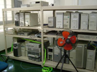
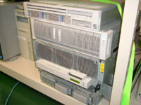
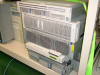

NaCl 訪問記
はじめに
 まつもとさん、前田さん、かずひこさんなどが勤めておられる株式会社ネットワーク応用通信研究所 (NaCl) に行ってきたので、ついでに色々と聞いてきました。
まつもとさん、前田さん、かずひこさんなどが勤めておられる株式会社ネットワーク応用通信研究所 (NaCl) に行ってきたので、ついでに色々と聞いてきました。
とくに、まつもとさんは Ruby を作ってお給料貰ってるそうなので、Rubyist 的には大変興味深い会社です。
本稿では NaCl ってどんな会社？ など、見てきた、聞いてきた内容についてレポートします。
インタビュー
とりあえず、どんな会社？ ってことで、聞いてみました。
- 聞き手
- ささだ
- 語り手
- まつもとさん、前田さん、かずひこさん
- 日にち
- 2004 年 8 月 30 日
- 場 所
- 株式会社ネットワーク応用通信研究所 本社
- ささだ
- ネットワーク応用通信研究所 (NaCl) ってどういう会社なんですか？
- 前田
- いい会社です。素晴らしい会社です。
- かずひこ
- 横に社長がいるからめったなことがいえないよね (笑)
- まつもと
- ソフトウェアを開発しています。ウェブページにかいてあるようなこと。
- かずひこ
- あれは、あんまり見ちゃいけないらしい。
- 前田
- 設立当初からあんまりかわってないような。
仕事の話
ORCA
- ささだ
- 最近は何してるんですか？
- まつもと
- 最近稼いでるのは ORCA (日本医師会研究事業プロジェクト［オルカプロジェクト］) かなぁ。レセプトってあるんだけど、保険の請求書。で、それを計算する計算機が病院に一台ずつあるんだけど、従来はオフコンとかだったりして、結構値段がするんだよね。500 万とか。大きいところだと何千万とか。で、高いし、オフコンってはやってなくて、ディスコンになってるのも結構ある。じゃぁ、別のに載せ換えようか、となると、また 500 万。データの移行はできたりできなかったりして、できても別に何百万とります、とか。で、それはちょっといやだろうっていって。日本医師会ってところが、オープンソースで作りましょう、プラットホームは安い Linux マシン、いいの買っても数十万、ソフトウェアは無償ってことに。で、実際うちがそれを作ってる。ということで、うちはオープンソースを作って開発費をもらってる。これが一番でかいのかな。
- ささだ
- 日本医師会ってところから出るんですか？
- まつもと
- そうそう。
- ささだ
- で、全国のお医者さんに？
- まつもと
- まぁ対応規模とかあるんだけど、今は導入、導入テスト中で 800 を超えてる。全国には何万のお医者さんが居るので、まだまだだけど。
- ささだ
- バグは許されませんよね、そういうの。
- まつもと
- ライセンスが微妙で、OSD 準拠じゃない。日医の俺オープンソース。テーブルを弄っちゃいけないってのがある。
- 社長さん
- 2 が出て、public comment 募集中です。
- ささだ
- 開発はこちらで？
- まつもと
- メインはこっち。カスタマイズする会社はいくつかあるけど。COBOL で書いたアプリケーション。
実は COBOL の会社
- ささだ
- COBOL 使ってるんですか。
- まつもと
- がりがり使ってるよ。
- 前田
- この部屋 (ささだ注：普段まつもとさんたちが居る部屋の隣の部屋にきて聞いてます) の人はみんなコボラー。実は。
- まつもと
- 今はコボラーのほうが多いのかなぁ。Ruby の人より。
- かずひこ
- ええ、Rubyist 90% みたいなのは誤解ですから (笑)
- ささだ
- COBOL の会社だったんですか。
- まつもと
- そうそう。
- 前田
- 西田圭介さんが OpenCOBOL 書かれたのはそのため。
- まつもと
- それまではまともな COBOL コンパイラがなかった。で、商用レベルに使えるものができあがった。
- 前田
- 生越さんと仕様でもめてましたよね。文化的なバックグラウンドが違うんですよね。
ほかにも色々
- ささだ
- ほかの人は？ COBOL 以外。
- 前田
- 単発の仕事で全然違うことをやってることが多いですけど。
- まつもと
- どこどこのウェブアプリケーション作って、とか。
- 前田
- 自社の製品作るって感じじゃなくて、仕事がまわってきてそれを作る。
- ささだ
- 仕事に応じて環境とか言語とかは全然違う、と。
- 前田
- そうですね。
- まつもと
- Linux-Ruby はあったりも。うちの受託は Ruby でつくるのが結構多いんだけど、Ruby か C か。C++ 使ったケースってあったっけ？
- 前田
- C++ はコードいじるのは。
- まつもと
- いちから作ったことはないかな。受注で Java をうけたことがあるね。
- 前田
- C#で Windows ってのがありましたよ。
- まつもと
- まぁ、いろいろ。
就職の話
- ささだ
- 就職は？
- まつもと
- 随時受け付けております。
- かずひこ
- 最近多いですよね。しょっちゅう申し込みが。
- まつもと
- ここ一年くらい増えたかなあ。
- 前田
- あんまり普通の経路で入ってくる人は多くなかったんで。
- まつもと
- 今でも普通の経路じゃないと思うんだけど。
- ささだ
- どういうところを見るんですか。
- まつもと
- 普通に出す書類と、職務経歴票とか職務動機とか今まで書いたプログラムとかを、メールで提出してもらうんだよね。で、この人は自ら学べないなと思った人は、一次審査にはとおらないことが多いかもしれない。でも、僕は一次審査はしてないので、なんともいえないんだけど。
- 前田
- 全部ワードで送ってくる人とかいますよ。メール本文がなくて、全部ワード。
- まつもと
- メール本文とワードが同じ内容とか。あと、募集からなにから全部携帯メールだったとか。いろんなのがあって。
- ささだ
- ポストスクリプトだけとかはないですか。
- まつもと
- まだないねえ。
- ささだ
- 何次審査まであるんですか？
- まつもと
- 二次まで。二次が面接。
特殊なかずひこさん
- 前田
- かずひこさんの面接って雑談しかしてないですよね。
- まつもと
- かずひこくんはプレ面接があったから。
- かずひこ
- 遊びに来たときに社長さんとかが出てきて、あらまどうも、みたいなところである程度話していたし。技術的なことは、一応面接のときに聞かれるのかと思ってたら、社長のほうから「彼のスキルはまつもとくんが知ってるんだよね」とかっていって、「ええ、書いたプログラム見てますから」というその二言で終了して、あと雑談。オープンソース方面で活躍してたら、面接のスキル的なところとか、コミュニケーション能力とか、お互いわかってるから。あとはこういう顔ですねぇ、みたいな。
- まつもと
- そういうことが多いかなあ。でも、かずひこくんはちょっと特殊だけど。まぁ、デザイン系はうりだよね。
- 前田
- うちの会社のウェブがアレで。ねぇかずひこさん。
- まつもと
- 割と知られてきたのかなぁ。LL weekend で決心した、とかいう人がいたし。
- かずひこ
- 私の就職が微妙に勇気を与えてしまったらしい。
NaCl の風景
写真を撮らせてもらったので、その写真を掲載します。
仕事場
まつもとさんの机

前田さん、かずひこさんの机

サーバ室
たくさんのマシンとなぞの物体


fdiary.net のマシン、rubyist.net のマシン、噂の helium

 

おわりに
いかがでしたでしょうか。
本稿執筆にあたり、いろいろお世話になったまつもとさん、前田さん、かずひこさん、ネットワーク応用通信研究所の方々に感謝します。
(ささだ - ko1 at atdot dot net)